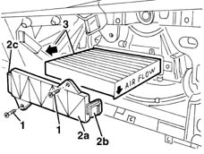
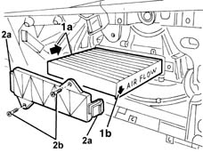

5010B09 purifying filter (antipollen) filter element - replace
- Path
- Procedures > 50 AUXILIARY UNITS > 5010 CLIMATE CONTROL - MISCELLANEOUS > 5010B heating/ventilation air pipes and ducts > 5010B09 purifying filter (antipollen) filter element - replace
- Kind
- repair procedure (removal / refitting; the operation number is the code)
- Applies to
- all engines; all production periods
- Interactive page
- https://sloeber94.github.io/elrnDB-lYpsln/en/#/2429281
Applies to: all engines; all production periods
 Removing
Removing
 Refitting
Refitting7040A18 glove compartment on facia - arrange
1. Undo the bolts.
2. Remove the cover (2a) releasing the retainers (2b) and (2c).
3. Extract the filter element.

Applies to: all engines; all production periods
Refitting
RemovingCheck that the filter element is not damaged or clogged.
1. Fi the filter element (1a).
2. Attach the retainers (2a) for the cover, then tighten the bolts (2b).

Topics linked from this page (1)
Topics that link to this page (11)
- U10 UNPLEASANT CLIMATE CONTROL ODOURS
- U11 UNPLEASANT HEATER ODOURS
- 0010K20 20,000km service coupon, emission control version
- 0010K40 40,000km service coupon, emission control versions
- 0010K60 60,000km service coupon - emission control versions
- 0010K80 80,000km service coupon - emission control versions
- 0010M01 100,000km service coupon, emission control versions
- 0010M20 120,000km service coupon, emission control versions
- 0010M40 140,000km service coupon - emission control versions
- 0010M60 160,000km service coupon - emission control versions
- 0010M80 180,000km service coupon - emission control versions